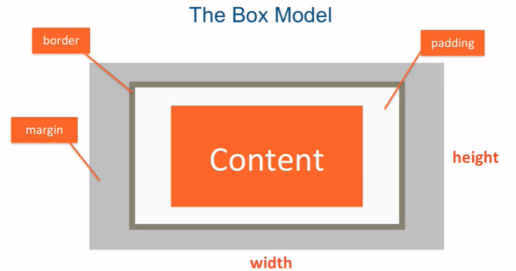
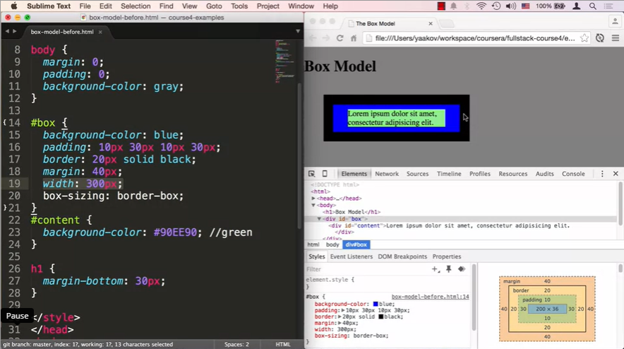
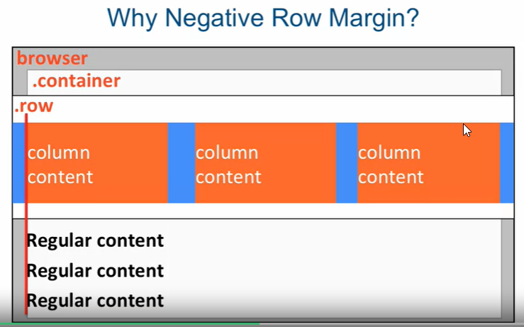

Coursera Web Development HTML/CSS/JS Notes
| 2022-02-02 |
| 2022-02-07 |
| 2022-02-08 |
| 2022-02-09 |
| 2022-02-10 |
2022-02-02
- CSS
- User experience of content matters; Structure is not enough
- A cool website to checkout csszengarden.com shows how css can style exactly the same html content in wildly different ways.
- Anatomy of a CSS Rule
- Selector - what element type the rule will apply to
- Declaration (in curly braces)
- Property
- Value
- Property: Value; pairs are separated by a colon and terminated by a semicolon.
- A rule can have many declarations.
- A collection of rules makes up a stylesheet.
- examples lecture 12 folder: css-syntax
- Types of selectors: Element, Class, and ID
- Selectors can be grouped using commas.
- Example: Lecture13, simple-selectors-before.html
- ID selector is the least reusable since ids can only be used as a single elements attribute.
- p {}
- .class {}
- #id {}
- combined: p, .class {}
- Combining Selectors
- Combine selectors to get more targeted styling on elements.
- One of the most common is an element with class ie. p.class {}, paragraph with class.
- Can be used with other selectors besides element: selector.class ie .class1.class2 {}
- Child Selector: article > p {}. This is read from right to left. Every paragraph element that is a child of an article element will be subject to the rule. The paragraph element must be a direct child in this case.
- Descendant Selector: article p {}. Again read from right to left. In this case every paragraph that is a descendent whether a direct child or further down will be subject to the rule applied.
- The child and descendant selector combinations are not limited to elements. They can be used to combine any selector type.
- Two combinations not covered
- Adjacent Sibling Selector: (selector + selector)
- General Sibling Selector: (selector ~ selector)
- Instructor leaves it up to us to look these up since they are not as commonly used.
- Pseudo Class Selectors
- Used when combinations of selectors won't work.
- Used when we want user actions to be a selector.
- syntax: selector:pseudo-class {}
- Covered in this course
- :link
- :visited
- :hover
- :active
- :nth-child(...)
- link, visited, hover are commonly used and straightforward.
- nth-child is very powerful but can get complicated.
- example: Lecture 15, pseudo-selectors-before.html
- Style Placement
- in line styling <p style="text-align: center;"> I am centered!</p>
- The least reusable way to style
- The least prefered way and to be avoided
- The prefered way is to link to an external stylesheet
- in the head of the html file create a <link rel="stylesheet" href="style.css"> element
- This is the most reuasable way and applies to every page in a website
- head styles are usually there to override external ones, but that practice is not ideal
- Conflict Resolution
- Cascading style sheets use the cascading algorithm
- Origin, Merge
- Origin Precedence: when there is a conflict, simple rule "Last Declaration Wins"
- When there is no conflict, simpler rule: "Declarations Merge"
- Inheritance
- If you apply a style rule to the body tag, every descendent will inherit that style.
- Specificity
- simple rule: The most specific selector combination wins
- The style attribute of an element is the most specific
- Order of specificity score: style, ID, Class/pseudo-class/attribute, # of elements
- Another way to override specificity is to ues the !important note: p {color: green !important;}
- Avoid using important unless you have to
- Text Styling
- font-family: Arial, Helvetica, sans-serif;
- color: #00ff00;
- font-style: italic;
- font-weight: bold;
- font-size: 24px;
- text-transform: capitalize;
- text-align: cetner;
- This text is of the above style!
- Relative Font Sizing
- font-size: 120%
- This sets the font to 120% of the default font-size
- You can then further style using "em"
- style="font-size: 2em;" multiples the previous sizing by 2
- If you want to decrease you use .5em and so on
back to top
2022-02-07
The Box Model
- In html every element is considered a box
- Each box has attributes of height, width, margin, border, padding.
- 
- Lecture 19, Part 1: The Box Model
- Chrome developer tools allows you to visualize the box model
- examples/Lecture19/box-model-after.html shows various attributes for the box model.
- One of the most important attributes is the box-sizing: border-box; attribute this tells the browser to set the width of the everything within the border box to the designated width rather than the content box.
- 
- Box sizing: is not an inherited property. If you set it to border-box in the body it will not be inherited by the children or descendents of the body element.
- * selector places the property in every element.
- border-box is new as of CSS3. Remember to check caniuse.com to see what browsers support it.
- margin is cummulative side to side, not cummulative, they collapse, top to bottom. The larger is used.
- You may notice that there are margins that you didn't specify in your website. These may be default browser settings. You can reset them using the * selector to apply 0 margin to all elements at the beginning of your css stylsheet.
- Summary
- Box model - essential to understand
- Prefer box-sizing: border-box;
- The * (universal) selector
- Cumulative (horizontal) and collapsing (mostly vertical) margins
- For vertical, collapsing, the larger of the two margins is taken.
- Content overflow and the overflow property. overflow: auto; Automatically makes the box have a scroll bar where needed.
- The Background Property
- background-color: blue;
- background-image: url("relative_to_css.png");
- background-repeat: ...
- repeat, no-repeat etc.
- Image is on top of color.
- You can also just use the property, background: url() no-repeat right center;
- This will override other outside background commands.
- Position Elements by Floating
- Floating element margins don't collapse
- When you float elements it takes them out of the normal document flow
- Use the clear property to clear the float property and resume the regular document flow.
If you float: left; one element you use clear: left; to clear the float: left;
-
You can also use clear: both;
- how to make a two column document:
- Two-columen-before.html
- Summary
- Floating elements can produce very flexible layouts
- Floats are taken out of normal document flow
- FLoats don't have vertical margin collapse
- To resume normal document flow, use the clear property
back to top
2022-02-08
Lecture 22, Part 1: Relative and Absolute Element Positioning
- Previously we talked about alternative positioning scheme: floating elements. It is alternatate to the normal flow of the document.
- Static positioning is absolute and ignores other positioning.
- With relative positioning an element is positioned relative to its position in the normal document flow.
- Positioning CSS (offset) properties are: top, bottom, left, right.
- With relative positioning the element is NOT taken out of normal document flow. Even if it is moved, its original spot is preserved.
- p {position: relative; top: 50px; left: 50px;
- The above properties should be red 50px "from the top" and 50px "from the left.
- You can also use negative values to move in the opposite direction.
- When a container element is offset using absolute positioning, every element within that container element is offset by that amount.
- examples/Lecture 22/positioning-before.html
- Four p elements within a div
- If we want positioning to be relative to a containing element we should set the position: relative of the ancestor element.
- By default the html element positioning is set to relative. It is the only element that has the positioning set to relative while all others are set to static.
- Summary
- Static positioning is default for all elements, except html
- Relative positioning offsets the element relative to its normal document flow position.
- Absolute positioning is relative to the closest ancestor which has positioning set to a non-static value.
- Offsetting the relative container element offsets all of its contents as well. This is convenient if we want to position a group of elements.
Media Queries
- example: @media (max-width: 800px) {...}
- If the statement within the parenthesis is true, the style within the curly braces is applied.
- max-width, min-width, orientation, screen, print
- features max-width and min-width are the most common.
- Logical operators such as and or , (for or) to combine these operators.
- and is the most common
- Before you get into the media queries you would have a base style. Then you reset those with the media query properties.
- Its important that you don't have overlapping boundaries on your media queries. ie if one ends at 1200px another should end at 1199px rather than 1200px.
- examples/Lecture 23/media-queries-before.html
- There is a base style applied before the media queries.
- Each paragraph has some base styling
- Large devices only: @media (min-width: 1200px) {#p1 {width: 80%}}
- Medium devices only: @media (min-width: 992px) and (max-width:1199px) {#p1 {width: 50%;} #p2 {width: 100px; height: 100px;}}
- The first media query and second do not overlap. The second uses the combinator "and"
- I added a media query to this page to resize the images to fit 95% of the screen for devices with a minimum width of 600px. The images should fit 95% of a smartphone device etc but be their originally set width for larger devices.
- Summary
- Basic syntax of a media query:
- @media (media feature)
- @media (media feature) logical operator (media feature)
- Remeber not to overlap breakpoints
- Usually, you provide base styling then change or add them in each media query
Responsive Design
- This came about due to the adoption of mobile devices.
- We need to have our sites work on all devices.
- Content is like water: "You put water into a cup it becomes the cup..."
- A responsive website is a site designed to adapt its layout to the viewing environment by using fluid, proportion-based grids, flexible images, and CSS3 media queries.
- The site's layout adapts to the size of the device, mainly the width.
- The most common responsive layout is the 12-Column Grid Layout.
- You can have 3, 3, 3, 3; 6, 6; 4, 4, 4;
- 1 column is about 8.33% ...
- Grids can be nested within other grids.
- example/Lecture 24/responsive-before
- The above example lays out a simple responsive framework.
- Part 2:
- We went over the need and idea of a responsive design
- We went over the 12-column grid layout.
- We use % to achieve fluid width. 1/12 = 8.33%
- We used media queries to define different column structure for large and medium devices
- We use a special viewport meta tag to turn off default mobile zooming:
- name="viewport" content="width=device-width, initial-scale=1"
Introduction to Bootstrap
- Bootstrap is the most popular HTML, CSS, and JS framework for developing responsive, mobile first projects on the web.
- Mobile first in its purest form means that you code the mobile site first then the desktop
- Either way... Mobile First == PLAN for mobile from the start
- Your CSS Framework should be mobile ready (Bootstrap)
- The #1 complaint of bootstrap is that it is too big and too bloated
- There are a lot of features you will probably never use but you can use selective download
- You can write your own framework that is more targeted/smaller, but it will take you a LOT longer to write it
- The engineers at twitter wrote this and took a lot of time and effort to address details carefully...
Introduction to Bootstrap: Part 2
- Download Bootstrap
- Download JQuery 2.x
- Intro to the most popular project on GitHub
- Mobile First - importance of planning for mobile from the start
- Barbones Bootsrap web page
The Bootstrap Grid System
- First the content must be inside a container (or container-fluid)
- Next the row class creates horizontal groups of columns, it applies negative left/right margins
- So the content aligns:
- 
- now the column class: col-SIZE-SPAN
- SIZE - screen width range identifier (lg, md, sm)
- columns will collapse (ie stack) below that width unless another rule applies
- SPAN - How many columns the element should span (1 through 12)
- You can use divs as shown or you can use header or nav elements to contain container and row elements respectively
- Structure Bootstrap expects: Needs to include .container or .container-fluid, All columns must be inside .row
- SIZE identifier identifies at which breakpoint specified column spans will be ignored and all elements will collapse (or stack)
- If no other rules apply, specifying col-xs-... will keep that layout no matter what the size of the screen
back to top
2022-02-09
Module 2 Project Solution
back to top
2022-02-10
Module 3
- Code a real website for a real client
- We'll learn how to fully utilize twitter bootstrap
- Visiting with the client...
- Most clients have no idea of what they want on their website
- Its your job to ask the right questions to lead them to the answer
- Bring other business websites to see what they like
- When everything is important, nothing is important
- Help the user identify what is really important
- Always find a way for the client to invest in your project
- Client needs to pick one person that is responsible for making decisions
- Limit the number of revisions the client can make (limit the number of free revisions)
- Google web client questionnaire
- Involve others if needed ie graphic designer, photographer etc
- In this case the client is investing by producing each and every dish on the menu
- Ideas for project: Website for Sarah, Website for interior designer who did our lounge